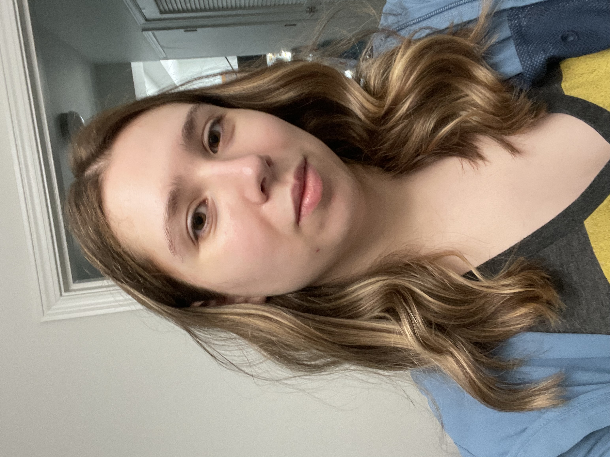

 
Hello, I am Belinda Bleeker. I am a second year HCDE Master's Student at the University of Washington Seattle. I want to learn about digital fabrication so I can use it for personal projects (my educational/job focus is UX reseaerch) and to gain a better understanding of other team needs and requirements once I have a job. My partner models jewelry, makes trap boxes, and so many other cool inventions, seeing his work is what inspired me to take this class in the first place. I hope to learn how to design a prototype, use different programs, and properly use the machinery. This allows me to use it for my own projects (cosplay and art) and it will help me work with engineering teams in the future. I am not very versed in fabrication although I have some experience, heatforming foam, sewing, and I've helped make more complex items for my cosplay. I also have a strong background in art, I can help with designing and drawing models, I feel that is the area I am best suited to teach my peers. Thank you for coming to look at my page and I can't wait to have fun this quarter!
Assignment 1: Laser Cutting Press Fit
Assignment 1: Sakura Press Fit
Assignment 2: Grasshopper Press Fit

Assignment 2: Octogon Press Fit
Assignment 3: 3D Printing

Assignment 4: Ginkgo Bunny Box
Assignment 4: N Mill Box

Assignment 4: Ginkgo Bunny Box
Assignment 5: Sunset Pendant and Lamps
Assignment 5: Getting Meshy with Lamps

Assignment 5: Sunset Pendant
Assignment 6: Final Lamp and Molding Owlbert
Assignment 6: Lamps and Modling Part 1
.gif)
Assignment 6: Lamp